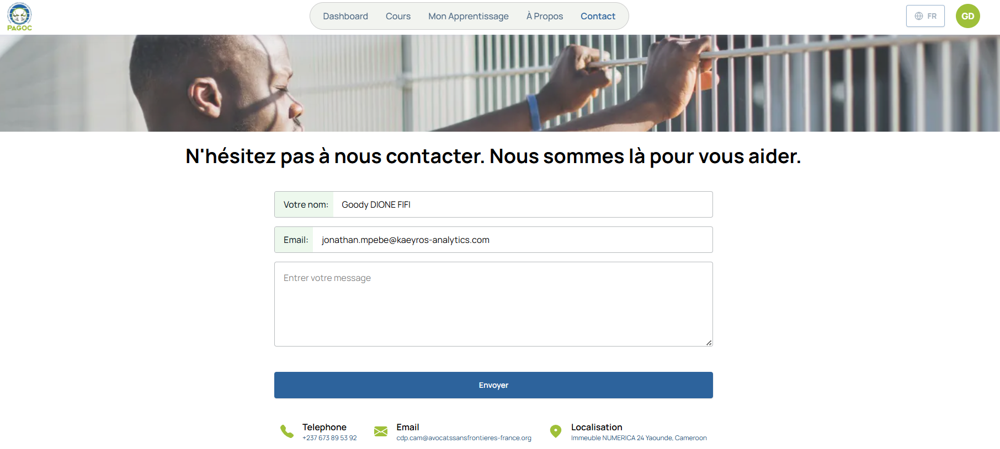

Contactez-nous : nous sommes là pour vous aider
{kind=link}
La section « Contact » est votre point d’accès direct à l’équipe PAGOC MOOC. Que vous ayez une question technique, besoin d’aide pour votre formation, ou souhaitiez partager votre expérience, nous sommes à votre écoute.
Les différentes façons de nous contacter
1. Formulaire de contact en ligne Le moyen le plus simple et rapide pour nous joindre :
Comment utiliser le formulaire : 1. Votre nom : Indiquez votre nom complet 2. Email : Votre adresse email pour notre réponse 3. Votre message : Décrivez clairement votre demande 4. Envoyer : Cliquez sur le bouton pour nous envoyer votre message
Conseils pour un message efficace : - Soyez précis : Décrivez votre problème ou question en détail - Indiquez le contexte : Sur quel cours, quelle page, quelle action - Mentionnez votre objectif : Ce que vous espérez obtenir comme réponse - Restez courtois : Nous sommes là pour vous aider
Types de demandes via le formulaire : - Support technique : Problèmes de connexion, erreurs, bugs - Questions pédagogiques : Doutes sur les contenus des cours - Informations générales : Renseignements sur les modules - Suggestion : Idées pour améliorer la plateforme
2. Contact direct par téléphone Pour les questions urgentes ou si vous préférez parler à quelqu’un :
+237 673 89 53 92
Quand nous appeler : - Heures ouvrées : Lundi au Vendredi, 8h00 à 17h00 - Fuseau horaire : GMT+1 (Heure du Cameroun) - Langues : Français et Anglais
Pour quel type d’appel utiliser le téléphone : - Urgences techniques : Si vous ne pouvez pas accéder à la plateforme - Questions complexes : Si votre demande nécessite une explication détaillée - Assistance personnalisée : Si vous avez besoin d’accompagnement - Problèmes de connexion : Si vous avez des difficultés techniques
3. Contact par email Pour les demandes qui ne nécessitent pas de réponse immédiate :
cap.cameroun@avocatsansfrontieres-france.org
Quand utiliser l’email : - Questions détaillées : Si vous devez envoyer des captures d’écran - Documents joints : Pour envoyer des fichiers ou preuves - Demandes formelles : Partenariats, certifications, etc. - Suivi de demande : Pour garder une trace écrite
Informations à inclure dans votre email : - Objet clair : Ex: « Question sur le Module 2 - Droits de la défense » - Votre nom complet : Pour vous identifier facilement - Votre numéro d’utilisateur : Si vous en avez un - Description détaillée : Plus vous donnez de détails, mieux nous pourrons vous aider
4. Contact physique Si vous préférez nous rencontrer en personne :
Immeuble NUMERICA 2A, Yaoundé, Cameroun
Quand venir nous voir : - Rendez-vous obligatoires : Appelez avant pour fixer un rendez-vous - Heures de réception : Lundi-Vendredi, 9h00-16h00 - Pièce d’identité : Prévoyez de justifier votre identité - Motif de visite : Précisez pourquoi vous venez
Services disponibles sur place : - Inscription assistée : Aide pour créer votre compte - Support technique avancé : Résolution de problèmes complexes - Formation personnalisée : Accompagnement pour vos premiers pas - Réunion de partenariat : Pour les institutions et organisations
Types de support et délais de réponse
Support technique (problèmes plateforme) - Urgence : 2 heures (problème bloquant) - Normal : 24 heures (questions techniques) - Faible priorité : 48 heures (améliorations, suggestions)
Support pédagogique (questions sur les cours) - Simple : 24 heures (questions directes sur les contenus) - Complexe : 48 heures (cas pratiques, analyses) - Recherche : 72 heures (recherches approfondies)
Support administratif (comptes, certificats) - Inscription : 24 heures - Certificats : 48 heures - Modifications profil : 24 heures - Suppression compte : 72 heures
Informations générales (projet, partenariats) - Réponse standard : 5 jours ouvrés - Partenariats : 10 jours ouvrés - Médias : 3 jours ouvrés - Recherches : Selon complexité
Problèmes courants et comment les éviter
« Je n’ai pas reçu de réponse à mon message » - Vérifiez vos spams : Notre réponse peut être dans votre dossier indésirable - Attendez le délai indiqué : Chaque type de demande a son délai - Vérifiez votre email : Assurez-vous qu’il n’y a pas d’erreur de frappe
« Je ne peux pas joindre le téléphone » - Vérifiez les heures : Nous sommes ouverts 8h-17h, Lundi-Vendredi - Essayez plusieurs fois : La ligne peut être occupée - Utilisez le formulaire : Alternative si vous ne parvenez pas à nous joindre
« Mon message est trop long pour le formulaire » - Soyez concis : Allez droit au but - Utilisez l’email : Pour les messages détaillés - Divisez votre demande : Un message par sujet
« Je ne sais pas quel canal utiliser » - Urgence technique : Téléphone ou formulaire avec « Urgent » - Question cours : Forum d’apprentissage ou formulaire - Partenariat : Email avec objet « Partenariat » - Suggestion : Formulaire de contact ou email
Ressources d’aide disponibles
Avant de nous contacter, consultez : - FAQ : Réponses aux questions les plus fréquentes - Guides vidéo : Tutoriels pour utiliser la plateforme - Forums : La communauté peut déjà avoir la réponse - Base de connaissances : Articles détaillés sur chaque sujet
Auto-assistance 24/7 : - Centre d’aide : Accessible en permanence sur la plateforme - Tutoriels interactifs : Guides pas-à-pas - Glossaire : Définitions des termes juridiques - Historique des questions : Voir si votre question a déjà été posée
Quand utiliser l’auto-assistance : - Problèmes techniques simples : Mot de passe oublié, navigation - Questions générales : Comment fonctionne une fonctionnalité - Horaires de nuit : Quand le support direct n’est pas disponible - Urgences mineures : Pour résoudre rapidement sans attendre
Notre engagement de service
Ce que nous promettons : - Réponse dans les délais : Respect des temps de réponse indiqués - Écoute attentive : Compréhension de votre besoin réel - Solutions adaptées : Réponse personnalisée à votre situation - Suivi jusqu’à résolution : Nous ne laissons pas tomber votre demande
Qualité de notre service : - Professionnalisme : Courtoisie et expertise dans nos réponses - Disponibilité : Plusieurs canaux pour nous joindre facilement - Transparence : Honnêteté sur ce que nous pouvons et ne pouvons pas faire - Amélioration continue : Votre feedback nous aide à nous améliorer
Comment nous aider à mieux vous servir : - Soyez précis dans vos demandes : Plus de détails = meilleure réponse - Utilisez le bon canal : Choisissez le moyen le plus adapté à votre besoin - Donnez votre feedback : Dites-nous si notre service était satisfaisant - Soyez patient : Nous faisons de notre mieux pour vous aider rapidement
Rejoignez notre communauté
Au-delà du support technique : - Forums d’apprentissage : Échangez avec d’autres professionnels - Groupes d’étude : Formez des équipes pour apprendre ensemble - Réseaux sociaux : Suivez nos actualités et conseils - Événements : Participez à nos webinaires et rencontres
Bénéfices de la communauté : - Apprentissage mutuel : Chacun apporte son expérience - Support entre pairs : Entraide entre apprenants - Réseau professionnel : Contacts utiles pour votre carrière - Motivation collective : Encouragement et célébration des succès
Comment participer : - Inscrivez-vous à la newsletter : Restez informé des nouveautés - Suivez-nous sur les réseaux sociaux : @PAGOCMOOC - Participez aux forums : Posez questions et aidez les autres - Assistez aux événements : Webinaires, ateliers, rencontres
Remerciements et reconnaissance
Merci de votre confiance En choisissant PAGOC MOOC pour votre formation, vous faites confiance en notre capacité à vous offrir un apprentissage de qualité. Nous sommes honorés de vous accompagner dans votre développement professionnel.
Votre succès est notre succès Chaque professionnel que nous formons qui devient meilleur dans sa pratique contribue à notre mission d’une justice plus équitable au Cameroun. Vos réussites sont nos meilleures réussites.
Ensemble pour une meilleure justice Merci de votre engagement pour l’amélioration du système judiciaire camerounais. Chaque question que vous posez, chaque feedback que vous donnez, nous aide à rendre PAGOC MOOC meilleur pour tous.
Nous sommes là pour vous, à chaque étape de votre formation !
Contactez-nous dès que vous avez besoin de nous. Votre succès est notre priorité.